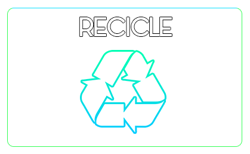
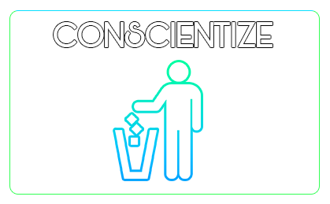
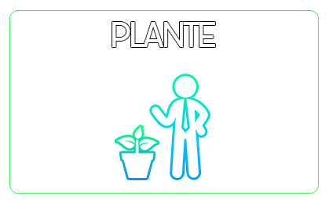

"A sabedoria da natureza é tal que não produz nada de supérfluo ou inútil."
Nicolau Copérnico



Realize a melhor negociação
Nossos projetos tem reconhecimento internacional e garantia da melhor mão de obra. A Liminize dispõe de mais de 300 profissionais renomados que irão lhe proporcionar uma proposta sem igual. Com mais de 10 anos de atuação, nossa empresa possui diversos projetos completos com sucesso. Procuramos sempre tratar nosso cliente como um familiar, os respeitando e respitando também os princípios da sustentabilidade. Procuramos sempre inovar e oferecer os melhores serviços, para que tanto o meio ambiente quanto o contratador saiam satisfeitos. É possível sim desenvolver um negócio em equilíbrio com o meio ambiente. Para mais informações deixe-nos um e-mail ou contate pelo nosso telefone.
Promovendo o equilíbrio
A Liminize é uma consultoria em meio ambiente que procura oferecer os melhores serviços possíveis à seus clientes. Todos nossos projetos são validados e revisados pela IBGE para que consigamos garantir o mais fiel cumprimento da legislação ambiental.
Fazer o Bem
Promova a natureza, promova o bem. Construa obras e projetos sem que haja a necessidade de causar um desequilíbrio ambiental.